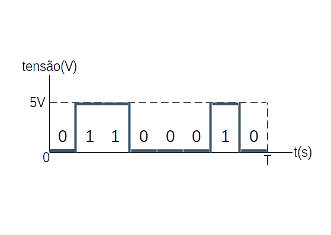

Section2Introdução à teoria básica da comunicação de dados
Na seção anterior (Section 1), vimos algumas informações sobre ondas que iremos usar para compreender um pouco sobre como dados podem ser enviados pelos meios físicos e de como as propriedados dos meios, em relação à propagação de ondas ou sinais, interfere na capacidade de envio de dados através de sinais.
Tópicos
Análise de Fourier
Sinais limitados pela largura de banda
Taxa máxima de dados em um canal
Análise de Fourier
Os sinais utilizados para a transmissão de dados podem ser a variação de alguma propriedade física, como tensão ou corrente variando no tempo. Podemos denominar esta variação como uma função do tempo \(f(t)\text{,}\) e podemos modelar o comportamento do sinal para analisá-lo matematicamente. O modelo que usaremos aqui será a Série de Fourier, criada por Jean-Baptiste Fourier no séc. XIX.
Segundo Fourier, qualquer função periódica \(g(t)\text{,}\) razoavelmente estável, de período \(T\text{,}\) pode ser construída como a soma de um número, infinito ou não, de senos e cossenos, ou seja:
\(f=\frac{1}{T}\) é a frequência fundamental ou frequência do primeiro harmônico.
\(a_n\) e \(b_n\) são as amplitudes dos \(n\)-ésimos harmônicos.
\(c\) é uma constante.
Uma vez que se tenha o período da freqüência fundamental \(T\) e as amplitudes dos senos e cossenos, pode-se reconstruir a função original.
Mais adiante, teremos como exemplo, que encontrar as amplitudes \(a_n\) e \(b_n\) dos primeiros harmônicos de um sinal, que no caso, é uma onda modulando na amplitude um caratere de 8 bits. Para encontrar tais amplitudes e a constante \(c\text{,}\) usamos as equações
\begin{equation*}
c = \frac{2}{T}\int_0^T g(t)dt
\end{equation*}
Como veremos no exemplo, o tempo associado ao sinal inteiro, no caso, aos 8 bits do caractere, será dado como sendo o período \(T_1\) da freqüência fundamental \(f_1\text{.}\) Porém, esse sinal irá passar por um canal e, dependendo da freqüência máxima permitida por este, talvez não seja possível enviar o sinal de modo que ele seja compreensível pelo receptor, e isso saberemos quando, baseado na freqüência fundamental \(f_1\text{,}\) encontrarmos o maior harmônico \(F_n=nf_1\text{,}\) de modo que \(F_n\leq\mathcal{f}\text{,}\) sendo \(\mathcal{f}\) a freqüência máxima permitida no canal. Compreendamos como se dá tal limitação na seção abaixo.
Como a largura de banda pode limitar os sinais?
Como a largura de banda pode limitar os sinais?
Como anunciamos anteriormente, usemos como exemplo o envio do caractere "b", em ASCII, representado como a seqüência de 8 bits 01100010. Considerando que o sinal será enviado serialmente por um fio usando o valor de tensão 0V para representar o bit 0 e 5V para representar o bit 1, a saída de voltagem do computador transmissor seria dado pelo sinal

Pergunta-se: Quais os coeficientes da série de Fourier para os 4 primeiros harmônicos? Em seguida, faça gráficos considerando cada harmônico como sendo a frequência máxima, ou seja, reconstrua o sinal com n=1, depoic com n = (1,2), depois com n=(1,2,3), e, por fim, com n = (1,2,3,4). O applet interativo abaixo pode ajudar a entender a influência do número de harmônicos na capacidade de envio de sinais. Por fim, obtenha o espectro de potências, que é um gráfico que informa, grosseiramente falando, o quanto de cada freqüência é transmitido, que é proporcional a \(\sqrt{a_n^2+b_n^2}\text{.}\)
Respostas:
Como o sinal tem período \(T\text{,}\) cada bit leva um tempo \(T/8\) para ser transmitido. Sendo assim, podemos definir o final 01100010 como a função \(g(t)\text{,}\) dada por
\begin{equation*}
c = \frac{2}{T}\int_0^T g(t)dt=\frac{2}{T}\left[ \int_{T/8}^{3T/8}dt+\int_{6T/8}^{7T/8}dt\right]
=\frac{2}{T}\left[ t \bigg|_{T/8}^{3T/8}+t\bigg|_{6T/8}^{7T/8}\right]
\end{equation*}
\begin{equation*}
c =\frac{2}{T}\left[ \frac{3T}{8}-\frac{T}{8}+\frac{7T}{8}-\frac{6T}{8} \right] = \frac{3}{4}
\end{equation*}
De posse destas da equação da série de Fourier \(g(t)\text{,}\) e das equações dos coeficientes \(a_n\text{,}\) \(b_n\) e \(c\text{,}\) podemos remontar o sinal. Quanto maior for o valor de \(n\text{,}\) mais próximo do sinal original a função \(g(t)\) estará. Usando o applet abaixo, você pode observar como o sinal vai se tornando mais preciso à medida que \(n\) cresce.
Figure2.1.Série de Fourier
Como exercício, obtenha o sinais reconstruídos como pedido no enunciado em qualquer linguagem de programação ou planilha eletrônica.
Obtenhamos, então, o espectro de potências usando as expressões encontradas para os vários valores de \(n\)
.
Table2.2.Espectro de Potências
\(n\)
\(a_n\)
\(b_n\)
\(\sqrt{a_n^2+b_n^2}\)
\(1\)
\(0.2251\)
\(0.0932\)
\(0.2436\)
\(2\)
\(-0.1592\)
\(-0.4775\)
\(0.5033\)
\(3\)
\(-0.0750\)
\(-0.1811\)
\(0.1960\)
\(4\)
\(0.1592\)
\(0.000\)
\(0.1592\)
Figure2.3.A cubic plotted by SageMath on \([-3,2]\)
![A cubic function on the interval [-3,2]](images/sageplot-cubic.svg)